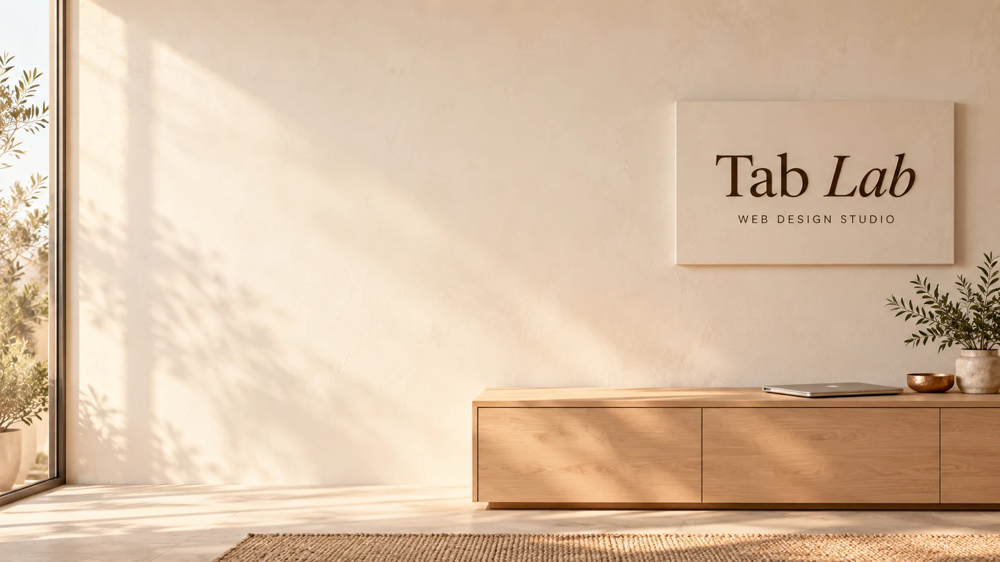

Why have a website?
Because people
expect one.
When someone hears about your business, they'll Google you. If you're not there, they move on.
A website gives them somewhere to land. It shows you're established, answers the usual questions, and makes it easy to get in touch.
And for roughly the cost of a single newspaper advertisement, you get something that doesn't vanish tomorrow.
It just gets on with the job while you get on with yours.